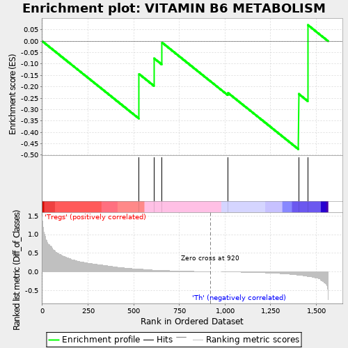
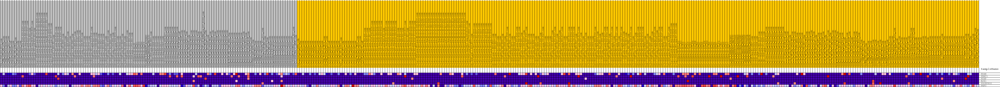
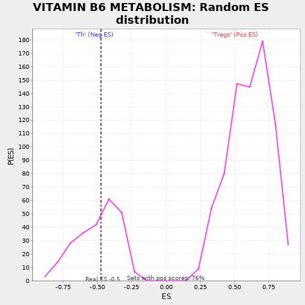

| | | Dataset | expr.pheno.cls#Tregs_versus_Th |
| Phenotype | pheno.cls#Tregs_versus_Th |
| Upregulated in class | Th |
| GeneSet | VITAMIN B6 METABOLISM |
| Enrichment Score (ES) | -0.47443828 |
| Normalized Enrichment Score (NES) | -0.9565684 |
| Nominal p-value | 0.49586776 |
| FDR q-value | 0.6533639 |
| FWER p-Value | 0.947 |
Table: GSEA Results Summary

Fig 1: Enrichment plot: VITAMIN B6 METABOLISM
Profile of the Running ES Score & Positions of GeneSet Members on the Rank Ordered List
| PROBE | DESCRIPTION
(from dataset) | GENE SYMBOL | GENE_TITLE | RANK IN GENE LIST | RANK METRIC SCORE | RUNNING ES | CORE ENRICHMENT | | 1 | PDXK | na | | | 530 | 0.072 | -0.1444 | No |
| 2 | PSAT1 | na | | | 612 | 0.045 | -0.0755 | No |
| 3 | PDXP | na | | | 655 | 0.036 | -0.0059 | No |
| 4 | AOX1 | na | | | 1017 | -0.004 | -0.2270 | No |
| 5 | PHOSPHO2 | na | | | 1404 | -0.090 | -0.2313 | Yes |
| 6 | PNPO | na | | | 1454 | -0.123 | 0.0712 | Yes |
Table: GSEA details [plain text format]

Fig 2: VITAMIN B6 METABOLISM
Blue-Pink O' Gram in the Space of the Analyzed GeneSet

Fig 3: VITAMIN B6 METABOLISM: Random ES distribution
Gene set null distribution of ES for VITAMIN B6 METABOLISM